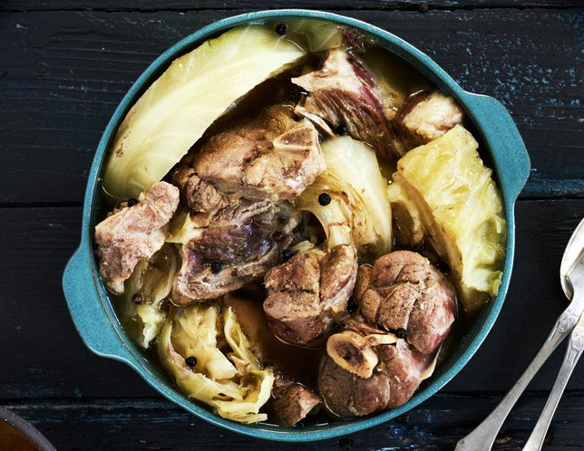
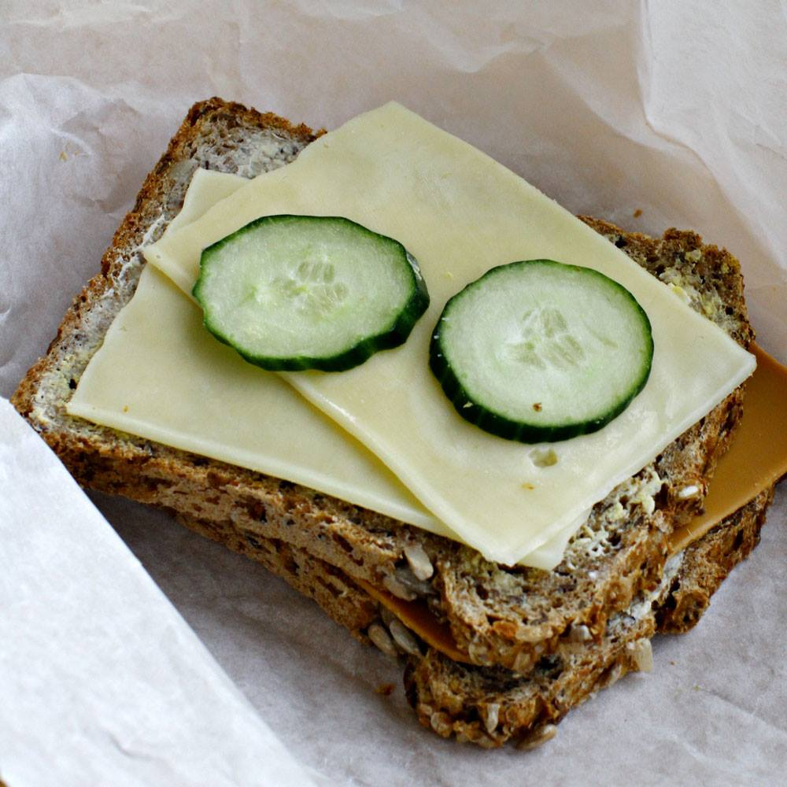
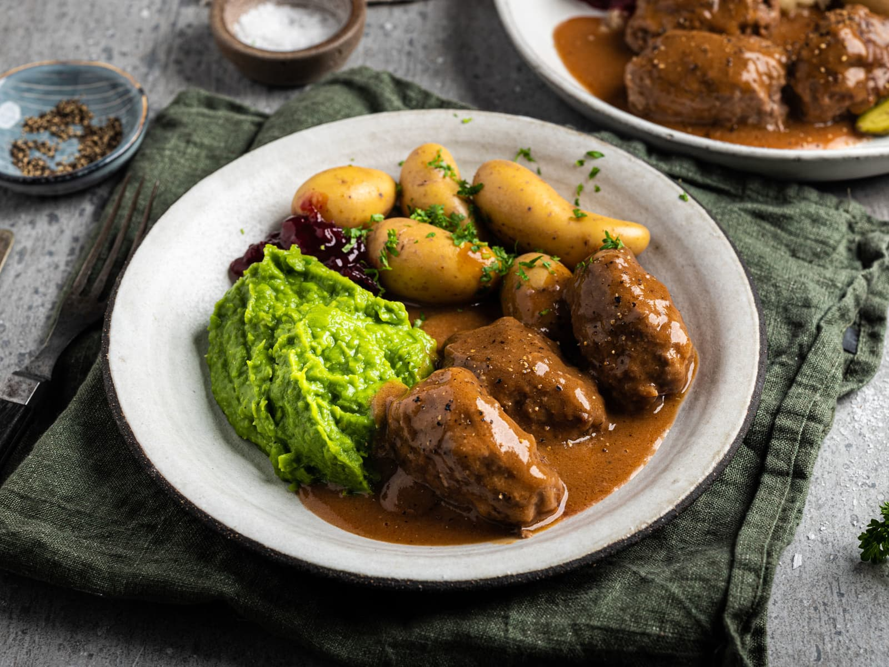
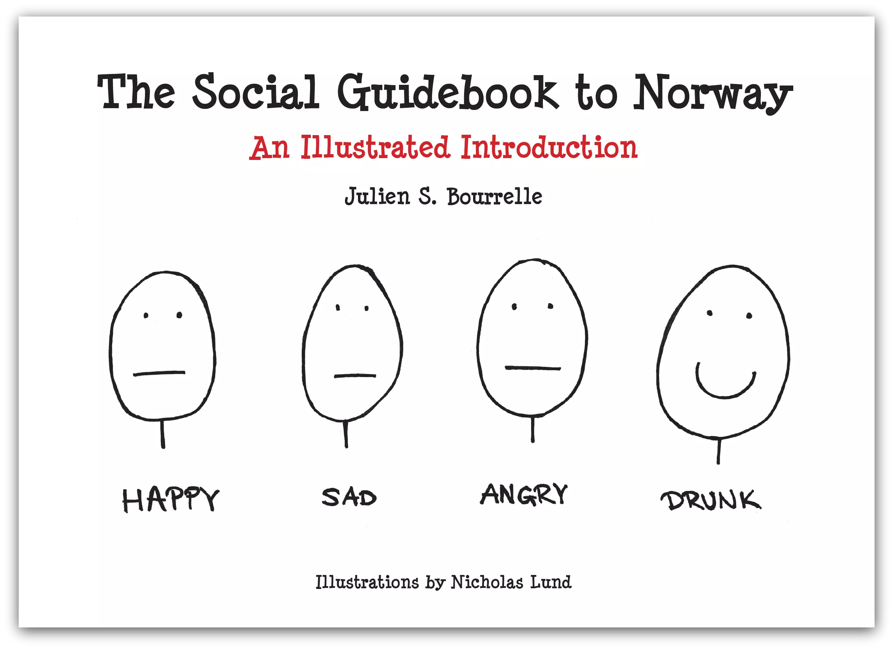
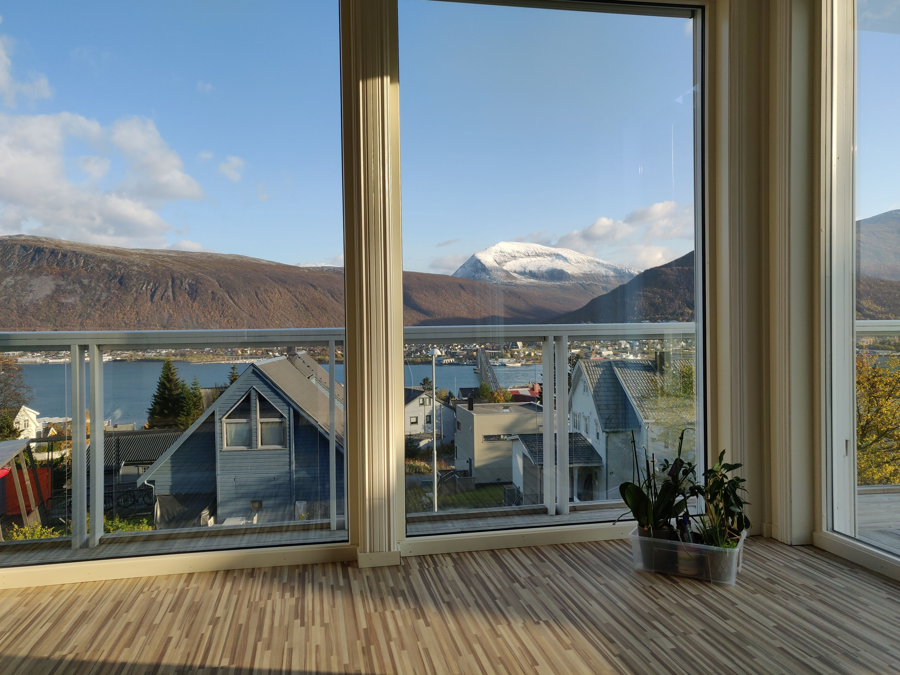
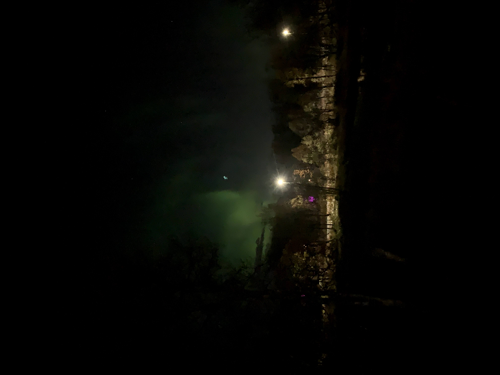
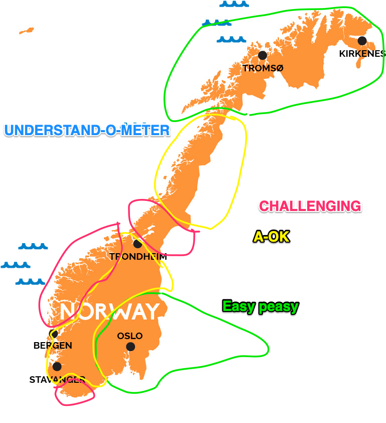
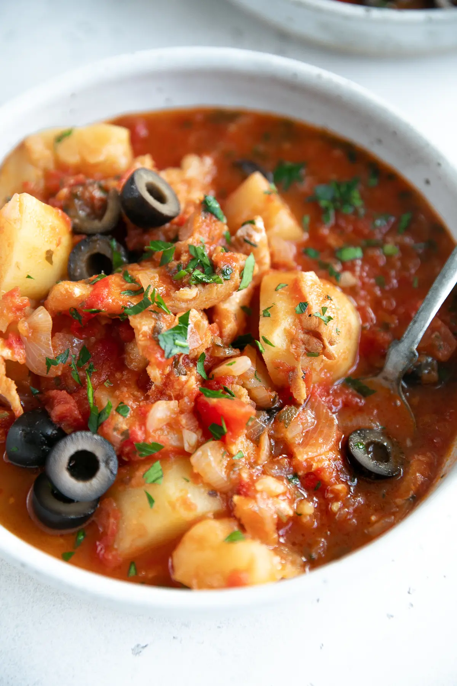
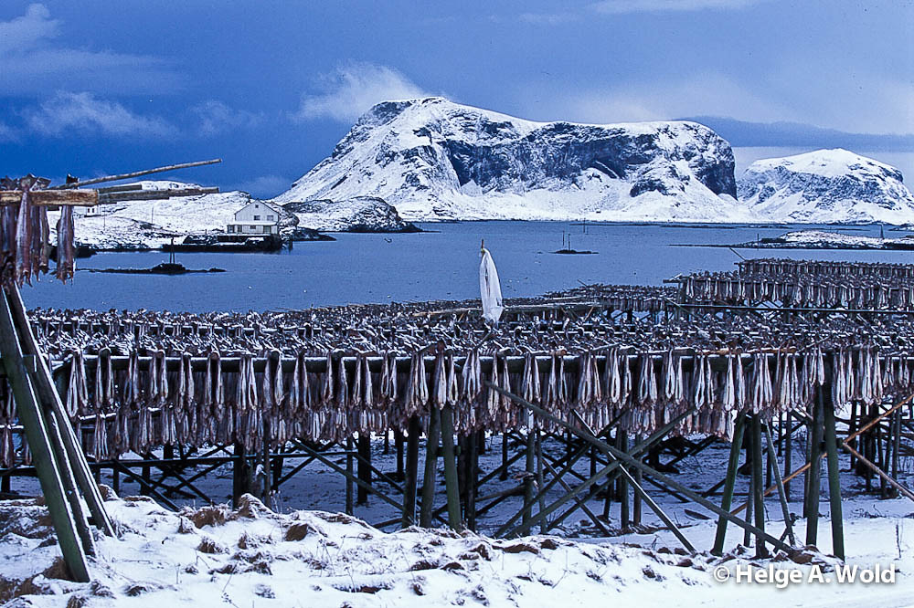
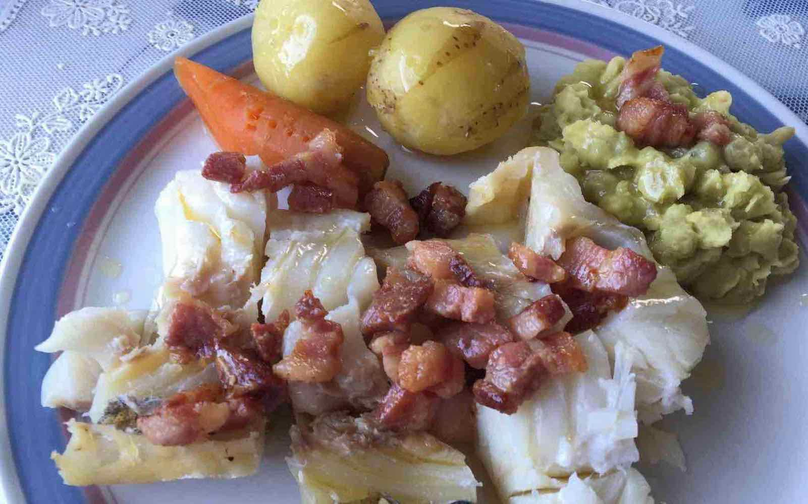

Norway and Tromsø
First Impressions
no video?
Norway - Fakta
Area: 385 207 km2
Population: 5.3 million
Tallest peak: 2686 m
Capital: Oslo
System of government: constitutional monarchy
Norway - Språk
Official languages: Norsk (norwegian) and Samisk (sami)
Norsk uses three extra letters (compared to english):
Ææ (the a in at)
Øø (the u in bust)
Åå (the awe in awe)
Hello: Hei, or Hallo
Cheers: Skål
Norway - Mat
National dish: Fårikål
Traditionally combinations of potatoes, fish or meat, and vegetables
Matpakke: packed lunch consisting of slices of bread with toppings
Eats the 2. most tacos in the world (per capita)
  
Norway - Folk
Values personal space (with some exceptions)
Cares about the weather

Tromsø - Nordens Paris
Population: 77 095
Name theories:
From straumr (stream or current in old norse)
Named after a mountain called tromma (the drum) on kvaløya
Was nicknamed the paris of the north in the 1800s due to sea trade with central europe

Tromsø - Klima
Subarctic climate (long winters, cold summers 😎)
Midnight sun, and no sun in the mid winter. A year in tromsø has 249 days.

Tromsø - Dialekt
English speakers tell me their easier to understand than people from my region
The Tromsø dialect is easy to understand for me (sounds calm)
A lot of dialect variation in Norway

Tromsø - Mat
Much like the rest of norway, but more emphasis on the fish
It's all about having food through the winter
Salted and rehydrated fish
  
Tromsø - Stereotyper
Foul mouthed
More open
They don't like southerners
Tromsø - To me
no video?
no video?
no video?